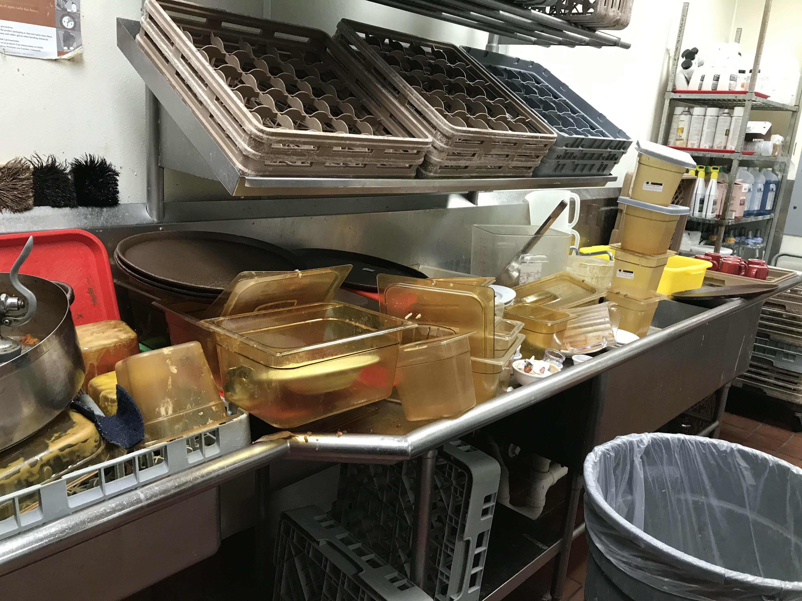

I went to Star of the Sea Elementary School then I went to Holy Cross Regional High
School. I honestly really liked my time at Holy Cross, I had amazing teachers and awesome friends.
Some of my best memories are from grade 12.
This was actually where I decided to go into Computer Science, My programming teacher (shoutout Mr. Sinsay)
introduced us to python, C#, and Unity. For our final project we literally created our own video game, it definetly sparked
an interest into programming for me.
My favourite programming language to work with so far in University has been C. Now,
This may be a controversial opinion, but I stand by it. I'm interested in operating systems and low level programming,
unfortunantly I couldn't get into CMPT 201 or CMPT 300, maybe next semester. Anyways, I see myself getting a job in that field, I'm not the biggest fan of web
development to be honest, but I dont mind it!
Fun fact, CMPT 295 was my favourite class so far at SFU! x86 was tough, but it was really fun and was my highest performing
class yet!...
Im in the process of researching how I can get started in GPU programming.

I got my first Job in Grade 11 as a Dishwasher at the local Fish and Chips resteraunt "C-Lovers".
It wasn't very glamourous, but at that age getting any kind of money is a treat, I saved up to buy my computer with that
money. Anyways, after about a year I worked my way up and I became a line cook.
That was one of the most stressful
things ever because, at a resteraunt everything is based on time so you really need to work fast, while also making sure the dish your
making looks and tastes good! It was challenging, but It helped me develop some soft skills and got me out of my shell.